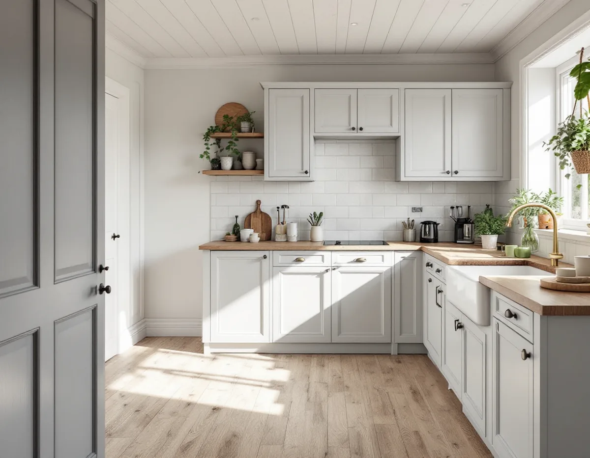
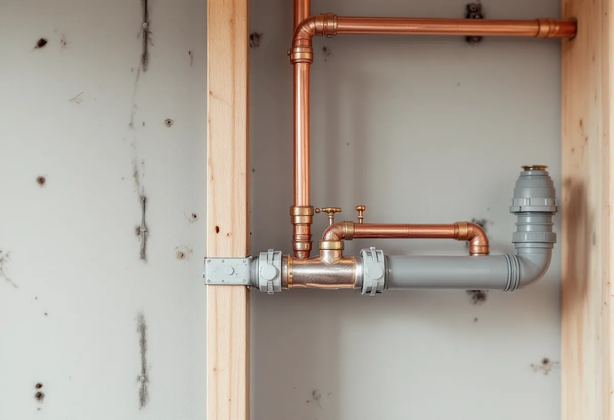
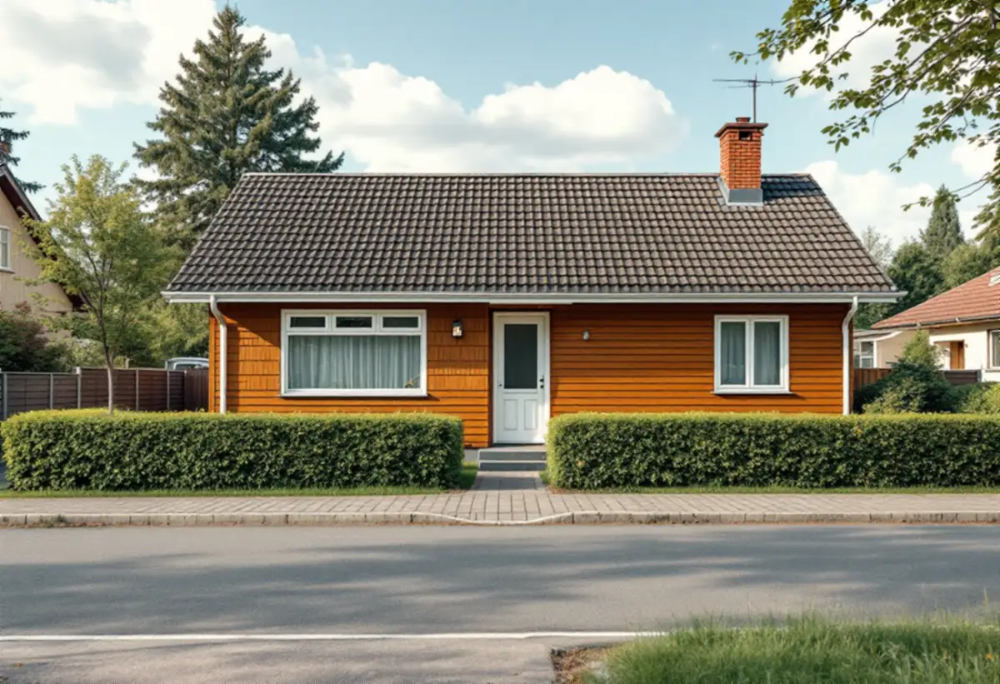

Platsbesök
Gratis besök där vi mäter och går igenom installationerna.
I Sigtuna kommun krävs en anmälan och ett startbesked innan du installerar eller ändrar ett ventilationssystem, och samma sak gäller när vatten och avlopp ändras väsentligt. Geal Entreprenad AB renoverar kök i Märsta, Sigtuna stad och kommunens övriga orter och tar fram underlaget när anmälan behövs.

Sigtuna kommun skriver att du måste göra en anmälan och invänta startbesked om du ska installera ett nytt ventilationssystem, och att det också gäller om du ska ändra ett befintligt system. Innebär åtgärden en stor förändring av husets utsida, till exempel ett aggregat eller ventilationskanaler på fasaden, behöver du söka bygglov i stället.
Till anmälan hör en situationsplan, som visar placering och läge sett ovanifrån och görs på kommunens tomtkarta, som enligt kommunen går att ladda ner gratis utan inloggning. Kommunen skriver också att ett förslag på kontrollplan ska lämnas in både vid bygglov och vid anmälan. Om det sker ändringar i den bärande konstruktionen ska de markeras på ritningarna, och en konstruktör ska intyga att kraven på bärförmåga uppfylls.

Om du väsentligt ändrar eller gör en ny installation för vatten eller avlopp behöver du enligt kommunen göra en anmälan. Ska byggnaden anslutas till det kommunala nätet anmäler du det i stället till Sigtuna Vatten och Renhållning. Att anlägga ett nytt eller ändra ett befintligt enskilt avlopp är en tillståndspliktig åtgärd enligt miljöbalken.
För ett kök i en villa med eget avlopp betyder det att en ny diskmaskin eller en flyttad diskbänk inte bara är en fråga om rör i väggen. Vi går igenom om ändringen påverkar avloppsanläggningen och tar fram konstruktionsritningar om bärande delar berörs. Är ändringen omfattande behöver du enligt kommunen också anlita en kontrollansvarig.
Bevarande- och förnyelseplanen för Sigtuna stad berättar att kulturvärden kan skyddas med skydds- och varsamhetsbestämmelser i detaljplanen, och att en skyddsbestämmelse kan omfatta både exteriör och interiör och gälla utformning, material, teknik och underhåll. Inom planens område finns ungefär 60 gällande detaljplaner.
I ett äldre hus i stadskärnan kontrollerar vi därför detaljplanen innan köket ritas. Det kan finnas en gammal spisplats, skorsten eller snickerier som ska vara kvar, och då planerar vi köket runt dem. En ny imkanal i ett sådant hus stämmer vi av med sotaren innan arbetet börjar.
Ett nytt kök börjar med en ritning där skåp, vitvaror, el, vatten och ventilation hänger ihop. När vi vet om anmälan krävs lägger vi in tiden för startbeskedet i tidsplanen, så att rivningen inte börjar för tidigt. Kommunens handläggare kan begära fler handlingar, och den tiden räknar vi med.
Under bygget hålls köket avstängt men resten av huset går att använda. Vatten stängs bara av under de timmar som rören kopplas om. Mer om tjänsten finns under köksrenovering, och för badrummet finns badrumsrenovering i Sigtuna.

Gratis besök där vi mäter och går igenom installationerna.
Kök, el, vatten och ventilation i ett förslag.
Situationsplan, ritningar och kontrollplan.
Arbetet börjar när kommunen gett klartecken.
Rivning, installationer och ytskikt.
Montage, kontroll och genomgång.
Skatteverket räknar det som rotarbete att montera fast köksinredning och installera vitvaror i samband med en omfattande renovering, liksom att byta köksluckor och bygga om planlösningen. Avdraget gäller i villor, radhus och fritidshus som är äldre än fem år och i bostadsrätter i samband med byggarbetet.
Avdraget är högst 30 procent av arbetskostnaden och högst 50 000 kronor per person och år. Material, skåp och vitvaror ger inget avdrag, och Geal drar avdraget direkt på fakturan.
Kökets storlek och utrustning, om ventilationen ändras och en anmälan med kontrollplan krävs, avloppets typ och nya dragningar, bärande väggar och hänsyn till ett äldre hus. Efter ett gratis platsbesök får du ett skriftligt kostnadsförslag.
Planering, el, VVS, fläkt och väggar.
Köksrenovering i Stockholm →Takbyte, takbesiktning och plåtarbeten.
Takläggare i Sigtuna →Sigtuna stad, Märsta och Arlanda.
Takrenovering i Sigtuna →Potten, Arlanda och gårdshusen.
Attefallshus i Sigtuna →Anmälan, fläkt och dusch i stället för badkar.
Badrumsrenovering i Sigtuna →Nytt hus, gästhus och större tomt.
Byggföretag i Sigtuna →Gatufasad, gårdsfasad och uthus i stadskärnan.
Fasadmålning i Sigtuna →Puts i stadskärnan, panel i dalgången.
Fasadrenovering i Sigtuna →Arlanda, ljudisolering och fönster i Sigtuna.
Fönsterbyte i Sigtuna →Bevarandeplanen, gammalt glas och fönsterkulörer.
Fönsterrenovering i Sigtuna →Golv på platta, fuktmätning och radon.
Golvläggare i Sigtuna →Plankgolv i äldre trähus.
Golvslipning i Sigtuna →Stadskärnan, Märsta och Rosersberg.
Målare i Sigtuna →Plåttak, rännor och beslag i Sigtuna.
Plåtslagare i Sigtuna →Staket, dörrar och gårdshus i stad och dalgång.
Snickare i Sigtuna →Lov, checklista och gårdarnas tegel.
Takbyte i Sigtuna →Ny tapet i äldre trähus.
Tapetsering i Sigtuna →Arlanda, uterum och handlingarna.
Tillbyggnad i Sigtuna →Ventilation, VA och kulturmiljö.
Totalrenovering i Sigtuna →